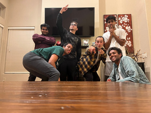
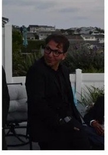

the sd boys

all dressed up
VI.
I miss the outdoor games competing and all,
Whether it was basketball, tennis or pickleball.
In all these games you were quite the show
Earning you the nickname tank, rightfully so.
VII.
I know we haven’t seen each other in a while
But I hope this poem brings you a smile.
Despite us all being farther apart,
You have a good place in all our hearts.
VIII.
Hard to believe soon you will be getting wed
Cannot wait to see the path you have ahead.
I wish for you and Daria to live your life with joys
But hopefully you remember our time as the sd boys.